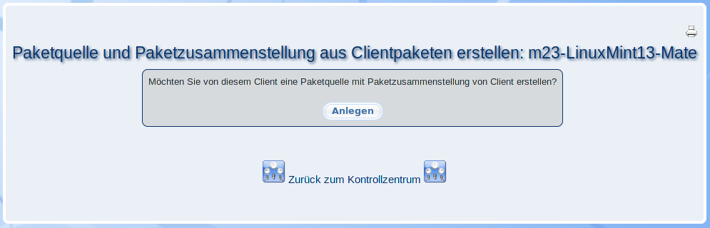

Mit diesem Dialog können Sie eine Paketquelle erstellen, die alle Pakete enthält, die auf dem Client installiert sind. Zudem wird eine Paketzusammenstellung angelegt, die die dazugehörigen Paketnamen enthält.

Hierbei haben die Paketquelle und die Paketzusammenstellung den Namen "Build_from_Clientname".
root
2013-08-18